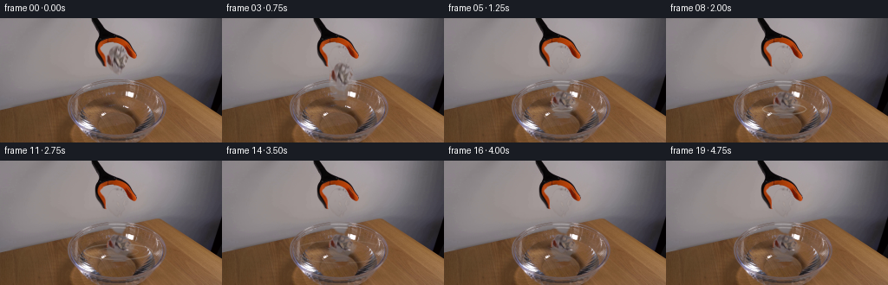
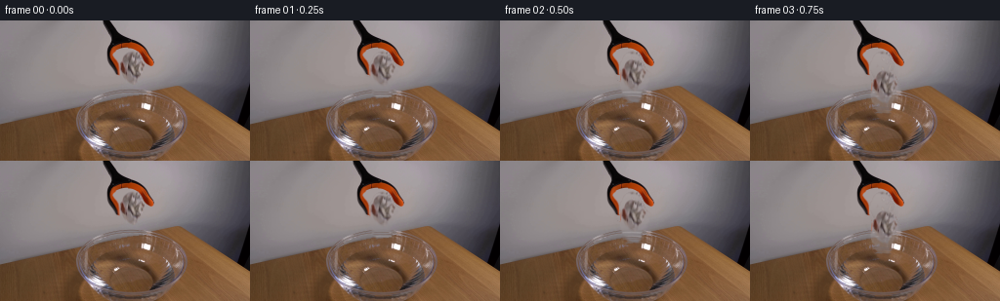
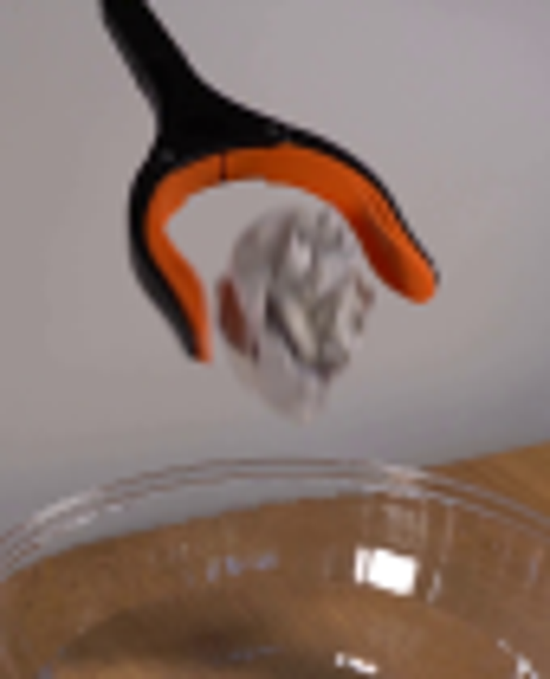
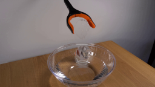
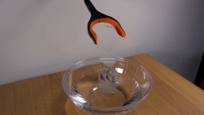

CODING AGENTS AS PIXEL WORLD MODELS
traex/GPT-5.6-Sol · 0133
点击播放 · 原生 RGB 像素
逐轮保存的候选
回放视频、检查图与代码变化。
每份候选均可单独播放。实际图片检查记录在下方工具轨迹中。
候选 01播放与检查图
点击播放 · 原生 RGB 像素


展开代码变化
--- 上一保存版本
+++ 本次保存版本
@@ -0,0 +1,205 @@
+from pathlib import Path
+import numpy as np
+import cv2
+from PIL import Image
+import artifact_io
+
+CASE_DIR = Path(__file__).resolve().parent
+src = np.asarray(Image.open(CASE_DIR / 'first_frame.png').convert('RGB'), dtype=np.uint8)
+H, W = src.shape[:2]
+
+# Paper silhouette as it appears between the jaws. A softly feathered matte keeps
+# all of the real folds and shading from the supplied photograph.
+poly = np.array([
+ [128,33],[139,34],[146,38],[150,45],[151,53],[148,63],
+ [145,69],[144,77],[140,84],[133,82],[128,77],[125,71],
+ [122,68],[120,60],[120,49],[123,40]
+], np.int32)
+matte_hard = np.zeros((H,W), np.uint8)
+cv2.fillPoly(matte_hard, [poly], 255)
+
+# Estimate the gently illuminated wall behind the paper with a robust quadratic
+# fit. It makes a stable clean plate without borrowing imagery from elsewhere.
+yy, xx = np.mgrid[0:H, 0:W]
+region = (xx >= 78) & (xx <= 186) & (yy >= 8) & (yy <= 91)
+# Background training samples: neutral, moderately bright wall pixels only.
+mx = src.max(axis=2); mn = src.min(axis=2)
+neutral = (mx - mn < 22) & (mx > 95) & (mx < 205)
+train = region & neutral & (matte_hard == 0)
+# Avoid the bowl's upper highlights and all nearby grabber structure.
+train &= ~(((xx > 101) & (xx < 165) & (yy < 65)))
+X = np.stack([np.ones(train.sum()), xx[train], yy[train],
+ xx[train]**2, xx[train]*yy[train], yy[train]**2], axis=1).astype(np.float64)
+wall = np.zeros_like(src, dtype=np.float32)
+Xall = np.stack([np.ones(H*W), xx.ravel(), yy.ravel(),
+ (xx**2).ravel(), (xx*yy).ravel(), (yy**2).ravel()], axis=1).astype(np.float64)
+for c in range(3):
+ coef, *_ = np.linalg.lstsq(X, src[:,:,c][train].astype(np.float64), rcond=None)
+ wall[:,:,c] = (Xall @ coef).reshape(H,W)
+wall = np.clip(wall, 0, 255)
+
+# Refine the matte from deviation from the estimated wall. This suppresses the
+# wall-colored fringe while retaining pale and shadowed facets of the paper.
+resid = np.sqrt(np.mean((src.astype(np.float32)-wall)**2, axis=2))
+soft_poly = cv2.GaussianBlur(matte_hard.astype(np.float32)/255.0, (0,0), 0.8)
+alpha = np.clip((resid-3.0)/15.0, 0, 1) * soft_poly
+# Interior low-contrast facets still belong to the crumpled paper.
+core = cv2.erode(matte_hard, np.ones((5,5),np.uint8)).astype(np.float32)/255.0
+alpha = np.maximum(alpha, core*0.48)
+alpha = cv2.GaussianBlur(alpha, (0,0), 0.45)
+alpha = np.clip(alpha, 0, 1)
+
+# Preserve visible portions of both jaws in case the broad paper silhouette
+# touches their antialiased edge.
+preserve_geom = np.zeros((H,W), np.uint8)
+left_jaw = np.array([[111,19],[129,20],[131,30],[125,34],[121,43],[122,57],[117,59],[111,43],[109,31]],np.int32)
+right_jaw = np.array([[126,18],[145,23],[153,33],[160,46],[161,57],[156,60],[150,53],[147,42],[140,35],[127,32]],np.int32)
+cv2.fillPoly(preserve_geom,[left_jaw,right_jaw],255)
+orange = (src[:,:,0] > src[:,:,1]*1.35) & (src[:,:,0] > 85) & (src[:,:,1] < 115)
+black = (src.mean(axis=2) < 63)
+preserve = (preserve_geom>0) & (orange | black)
+alpha[preserve] = 0.0
+
+# Clean plate under the released paper.
+clean = src.astype(np.float32).copy()
+a3 = alpha[:,:,None]
+clean = clean*(1-a3) + wall*a3
+
+# Restore the fine rear glass rim that passes behind the lowest paper folds.
+# Restrict the synthesized highlights to removed pixels only.
+rim_layer = np.zeros_like(clean, dtype=np.float32)
+rim_a = np.zeros((H,W), np.float32)
+def rim_ellipse(center, axes, color, opacity, thickness=1):
+ tmp = np.zeros((H,W), np.uint8)
+ cv2.ellipse(tmp, center, axes, 0, 180, 360, 255, thickness, cv2.LINE_AA)
+ aa = tmp.astype(np.float32)/255.0 * opacity
+ global rim_layer, rim_a
+ # Standard over for this thin highlight.
+ rim_layer[:] = rim_layer*(1-aa[:,:,None]) + np.array(color,np.float32)*aa[:,:,None]
+ rim_a[:] = 1-(1-rim_a)*(1-aa)
+rim_ellipse((134,102),(55,29),(208,206,207),0.52,1)
+rim_ellipse((134,103),(52,26),(224,222,221),0.36,1)
+rim_ellipse((134,103),(48,23),(132,126,127),0.28,1)
+restore = np.clip(alpha*1.8,0,1) * rim_a
+# rim_layer already includes opacity against black; use direct colored redraw by
+# recovering a normalized tint, then low-opacity composite.
+for y in range(H):
+ for x in range(W):
+ if restore[y,x] > 0.01 and rim_a[y,x] > 1e-4:
+ tint = rim_layer[y,x] / max(rim_a[y,x],1e-4)
+ q = min(0.58, restore[y,x])
+ clean[y,x] = clean[y,x]*(1-q) + tint*q
+clean = np.clip(clean,0,255).astype(np.uint8)
+
+# Crop the authentic paper sprite and its alpha.
+x0,y0,x1,y1 = 116,30,154,87
+sprite = src[y0:y1,x0:x1].copy()
+sprite_a = alpha[y0:y1,x0:x1].copy()
+sh, sw = sprite_a.shape
+pivot = np.array([(sw-1)/2, (sh-1)/2], np.float32)
+
+# Water mask constrains shadows and ripples to the inside of the glass bowl.
+water_mask = np.zeros((H,W),np.float32)
+cv2.ellipse(water_mask,(134,105),(46,25),0,0,360,1.0,-1,cv2.LINE_AA)
+water_mask = cv2.GaussianBlur(water_mask,(0,0),0.7)
+
+def over_color(frame, color, a):
+ """Composite a constant RGB color through a scalar alpha image."""
+ return frame*(1-a[:,:,None]) + np.array(color,np.float32)*a[:,:,None]
+
+def draw_ripples(frame, i):
+ if i < 4 or i > 15:
+ return frame
+ age = i-4
+ # Two expanding, vertically foreshortened rings on the water surface.
+ specs = []
+ r1 = 7 + age*4.7
+ specs.append((r1, max(2.2,r1*0.25), max(0.0,0.72-age*0.055)))
+ if age >= 2:
+ r2 = 5 + (age-2)*3.7
+ specs.append((r2,max(1.7,r2*0.24),max(0.0,0.40-(age-2)*0.045)))
+ for rx,ry,op in specs:
+ if op <= 0: continue
+ ring = np.zeros((H,W),np.uint8)
+ cv2.ellipse(ring,(136,105),(int(rx),int(ry)),0,0,360,255,1,cv2.LINE_AA)
+ aa = ring.astype(np.float32)/255.0 * op * water_mask
+ # A cool white front/side glint plus a subtle dark wake offset below.
+ frame = over_color(frame,(220,222,224),aa*0.62)
+ dark = np.roll(aa,1,axis=0)*0.22
+ frame = over_color(frame,(70,62,57),dark)
+ return frame
+
+def add_splash(frame, i):
+ if i not in (4,5,6): return frame
+ layer = np.zeros((H,W),np.uint8)
+ if i == 4:
+ cv2.ellipse(layer,(136,104),(10,4),0,190,348,210,1,cv2.LINE_AA)
+ cv2.line(layer,(129,103),(126,96),180,1,cv2.LINE_AA)
+ cv2.line(layer,(143,103),(146,95),190,1,cv2.LINE_AA)
+ cv2.circle(layer,(147,93),1,180,-1,cv2.LINE_AA)
+ elif i == 5:
+ cv2.line(layer,(127,102),(124,98),120,1,cv2.LINE_AA)
+ cv2.circle(layer,(124,96),1,145,-1,cv2.LINE_AA)
+ cv2.circle(layer,(149,98),1,125,-1,cv2.LINE_AA)
+ else:
+ cv2.circle(layer,(151,101),1,70,-1,cv2.LINE_AA)
+ aa = layer.astype(np.float32)/255.0 * water_mask
+ return over_color(frame,(226,227,226),aa*0.72)
+
+def paste_paper(frame, center, angle=0.0, sx=1.0, sy=1.0, wet=0.0):
+ # Transform source sprite into full-frame coordinates in one resampling step.
+ th = np.deg2rad(angle)
+ A = np.array([[sx*np.cos(th), -sy*np.sin(th)],
+ [sx*np.sin(th), sy*np.cos(th)]],np.float32)
+ c = np.array(center,np.float32)
+ trans = c - A @ pivot
+ M = np.concatenate([A,trans[:,None]],axis=1)
+ wa = cv2.warpAffine(sprite_a,M,(W,H),flags=cv2.INTER_LINEAR,borderMode=cv2.BORDER_CONSTANT,borderValue=0)
+ rgb = cv2.warpAffine(sprite,M,(W,H),flags=cv2.INTER_LINEAR,borderMode=cv2.BORDER_REPLICATE)
+ rgb = rgb.astype(np.float32)
+ if wet > 0:
+ # Wet paper becomes slightly darker, cooler, and more contrasty while
+ # preserving the photographed wrinkles.
+ lum = rgb.mean(axis=2,keepdims=True)
+ wet_rgb = (rgb-lum)*1.10 + lum*np.array([0.74,0.76,0.77],np.float32)[None,None,:]
+ rgb = rgb*(1-wet) + wet_rgb*wet
+ return frame*(1-wa[:,:,None]) + rgb*wa[:,:,None]
+
+frames = [src.copy()]
+# Paper center in the original crop is approximately (135,58).
+# Three free-fall samples, then impact/deformation and damped floating.
+poses = {
+ 1: ((135.0,60.0), 1.0,1.00,1.00,0.00),
+ 2: ((135.4,65.0), 3.0,1.00,1.00,0.00),
+ 3: ((136.0,76.0), 6.5,1.00,0.98,0.00),
+ 4: ((136.2,96.0), 8.0,1.02,0.84,0.12),
+ 5: ((136.3,102.0),5.0,1.04,0.70,0.38),
+}
+for i in range(1,20):
+ f = clean.astype(np.float32)
+ if i >= 4:
+ # Soft contact shadow/refraction under the floating paper.
+ shadow = np.zeros((H,W),np.uint8)
+ ry = 3 if i==4 else 4
+ cv2.ellipse(shadow,(136,108),(15,ry),0,0,360,150,-1,cv2.LINE_AA)
+ shadow = cv2.GaussianBlur(shadow,(0,0),2.4).astype(np.float32)/255.0
+ f = over_color(f,(63,55,50),shadow*water_mask*(0.18 if i==4 else 0.28))
+ f = draw_ripples(f,i)
+ f = add_splash(f,i)
+ if i in poses:
+ center,ang,sx,sy,wet = poses[i]
+ else:
+ age=i-5
+ center=(136.3 + 0.34*np.sin(age*0.72)*np.exp(-age/7.0),
+ 103.0 + 1.05*np.cos(age*0.88)*np.exp(-age/5.5))
+ ang=3.0 + 2.0*np.sin(age*0.55)*np.exp(-age/7.5)
+ sx=1.04
+ sy=0.70 + 0.025*np.cos(age*0.8)*np.exp(-age/5.0)
+ wet=min(0.72,0.42+0.035*age)
+ f = paste_paper(f,center,ang,sx,sy,wet)
+ frames.append(np.clip(f,0,255).astype(np.uint8))
+
+frames = np.stack(frames,axis=0)
+assert frames.shape == (20,144,256,3) and frames.dtype == np.uint8
+assert np.array_equal(frames[0],src)
+artifact_io.save(frames, CASE_DIR)
可观测工具轨迹
实际执行的命令与返回图片。
命令 1exit 0
/bin/bash -lc "cat prompt.txt && printf '\\n---RULES---\\n' && cat GENERATION_RULES.md"
命令 2exit 0
/bin/bash -lc "find . -maxdepth 2 -type f -printf '%p\\n' | sort"
命令 3exit 0
/bin/bash -lc "python3 - <<'PY'
from PIL import Image
im=Image.open('first_frame.png')
print(im.size, im.mode)
PY
command -v ffmpeg || true
command -v convert || true"命令 4exit 0
/bin/bash -lc 'cat artifact_io.py'
命令 5exit 0
/bin/bash -lc "python3 - <<'PY' mods=['cv2','numpy','PIL','scipy','skimage','imageio'] for m in mods: try: x=__import__(m); print(m,'ok',getattr(x,'__version__','')) except Exception as e: print(m,e) PY"
命令 6exit 0
/bin/bash -lc "python3 - <<'PY'
from PIL import Image
im=Image.open('first_frame.png')
im.crop((90,0,175,105)).resize((680,840)).save('.tmp/crop.png')
PY"命令 7exit 0
/bin/bash -lc "cat > generate.py <<'PY'
from pathlib import Path
import numpy as np
import cv2
from PIL import Image
import artifact_io
CASE_DIR = Path(__file__).resolve().parent
src = np.asarray(Image.open(CASE_DIR / 'first_frame.png').convert('RGB'), dtype=np.uint8)
H, W = src.shape[:2]
# Paper silhouette as it appears between the jaws. A softly feathered matte keeps
# all of the real folds and shading from the supplied photograph.
poly = np.array([
[128,33],[139,34],[146,38],[150,45],[151,53],[148,63],
[145,69],[144,77],[140,84],[133,82],[128,77],[125,71],
[122,68],[120,60],[120,49],[123,40]
], np.int32)
matte_hard = np.zeros((H,W), np.uint8)
cv2.fillPoly(matte_hard, [poly], 255)
# Estimate the gently illuminated wall behind the paper with a robust quadratic
# fit. It makes a stable clean plate without borrowing imagery from elsewhere.
yy, xx = np.mgrid[0:H, 0:W]
region = (xx >= 78) & (xx <= 186) & (yy >= 8) & (yy <= 91)
# Background training samples: neutral, moderately bright wall pixels only.
mx = src.max(axis=2); mn = src.min(axis=2)
neutral = (mx - mn < 22) & (mx > 95) & (mx < 205)
train = region & neutral & (matte_hard == 0)
# Avoid the bowl's upper highlights and all nearby grabber structure.
train &= ~(((xx > 101) & (xx < 165) & (yy < 65)))
X = np.stack([np.ones(train.sum()), xx[train], yy[train],
xx[train]**2, xx[train]*yy[train], yy[train]**2], axis=1).astype(np.float64)
wall = np.zeros_like(src, dtype=np.float32)
Xall = np.stack([np.ones(H*W), xx.ravel(), yy.ravel(),
(xx**2).ravel(), (xx*yy).ravel(), (yy**2).ravel()], axis=1).astype(np.float64)
for c in range(3):
coef, *_ = np.linalg.lstsq(X, src[:,:,c][train].astype(np.float64), rcond=None)
wall[:,:,c] = (Xall @ coef).reshape(H,W)
wall = np.clip(wall, 0, 255)
# Refine the matte from deviation from the estimated wall. This suppresses the
# wall-colored fringe while retaining pale and shadowed facets of the paper.
resid = np.sqrt(np.mean((src.astype(np.float32)-wall)**2, axis=2))
soft_poly = cv2.GaussianBlur(matte_hard.astype(np.float32)/255.0, (0,0), 0.8)
alpha = np.clip((resid-3.0)/15.0, 0, 1) * soft_poly
# Interior low-contrast facets still belong to the crumpled paper.
core = cv2.erode(matte_hard, np.ones((5,5),np.uint8)).astype(np.float32)/255.0
alpha = np.maximum(alpha, core*0.48)
alpha = cv2.GaussianBlur(alpha, (0,0), 0.45)
alpha = np.clip(alpha, 0, 1)
# Preserve visible portions of both jaws in case the broad paper silhouette
# touches their antialiased edge.
preserve_geom = np.zeros((H,W), np.uint8)
left_jaw = np.array([[111,19],[129,20],[131,30],[125,34],[121,43],[122,57],[117,59],[111,43],[109,31]],np.int32)
right_jaw = np.array([[126,18],[145,23],[153,33],[160,46],[161,57],[156,60],[150,53],[147,42],[140,35],[127,32]],np.int32)
cv2.fillPoly(preserve_geom,[left_jaw,right_jaw],255)
orange = (src[:,:,0] > src[:,:,1]*1.35) & (src[:,:,0] > 85) & (src[:,:,1] < 115)
black = (src.mean(axis=2) < 63)
preserve = (preserve_geom>0) & (orange | black)
alpha[preserve] = 0.0
# Clean plate under the released paper.
clean = src.astype(np.float32).copy()
a3 = alpha[:,:,None]
clean = clean*(1-a3) + wall*a3
# Restore the fine rear glass rim that passes behind the lowest paper folds.
# Restrict the synthesized highlights to removed pixels only.
rim_layer = np.zeros_like(clean, dtype=np.float32)
rim_a = np.zeros((H,W), np.float32)
def rim_ellipse(center, axes, color, opacity, thickness=1):
tmp = np.zeros((H,W), np.uint8)
cv2.ellipse(tmp, center, axes, 0, 180, 360, 255, thickness, cv2.LINE_AA)
aa = tmp.astype(np.float32)/255.0 * opacity
global rim_layer, rim_a
# Standard over for this thin highlight.
rim_layer[:] = rim_layer*(1-aa[:,:,None]) + np.array(color,np.float32)*aa[:,:,None]
rim_a[:] = 1-(1-rim_a)*(1-aa)
rim_ellipse((134,102),(55,29),(208,206,207),0.52,1)
rim_ellipse((134,103),(52,26),(224,222,221),0.36,1)
rim_ellipse((134,103),(48,23),(132,126,127),0.28,1)
restore = np.clip(alpha*1.8,0,1) * rim_a
# rim_layer already includes opacity against black; use direct colored redraw by
# recovering a normalized tint, then low-opacity composite.
for y in range(H):
for x in range(W):
if restore[y,x] > 0.01 and rim_a[y,x] > 1e-4:
tint = rim_layer[y,x] / max(rim_a[y,x],1e-4)
q = min(0.58, restore[y,x])
clean[y,x] = clean[y,x]*(1-q) + tint*q
clean = np.clip(clean,0,255).astype(np.uint8)
# Crop the authentic paper sprite and its alpha.
x0,y0,x1,y1 = 116,30,154,87
sprite = src[y0:y1,x0:x1].copy()
sprite_a = alpha[y0:y1,x0:x1].copy()
sh, sw = sprite_a.shape
pivot = np.array([(sw-1)/2, (sh-1)/2], np.float32)
# Water mask constrains shadows and ripples to the inside of the glass bowl.
water_mask = np.zeros((H,W),np.float32)
cv2.ellipse(water_mask,(134,105),(46,25),0,0,360,1.0,-1,cv2.LINE_AA)
water_mask = cv2.GaussianBlur(water_mask,(0,0),0.7)
def over_color(frame, color, a):
\"\"\"Composite a constant RGB color through a scalar alpha image.\"\"\"
return frame*(1-a[:,:,None]) + np.array(color,np.float32)*a[:,:,None]
def draw_ripples(frame, i):
if i < 4 or i > 15:
return frame
age = i-4
# Two expanding, vertically foreshortened rings on the water surface.
specs = []
r1 = 7 + age*4.7
specs.append((r1, max(2.2,r1*0.25), max(0.0,0.72-age*0.055)))
if age >= 2:
r2 = 5 + (age-2)*3.7
specs.append((r2,max(1.7,r2*0.24),max(0.0,0.40-(age-2)*0.045)))
for rx,ry,op in specs:
if op <= 0: continue
ring = np.zeros((H,W),np.uint8)
cv2.ellipse(ring,(136,105),(int(rx),int(ry)),0,0,360,255,1,cv2.LINE_AA)
aa = ring.astype(np.float32)/255.0 * op * water_mask
# A cool white front/side glint plus a subtle dark wake offset below.
frame = over_color(frame,(220,222,224),aa*0.62)
dark = np.roll(aa,1,axis=0)*0.22
frame = over_color(frame,(70,62,57),dark)
return frame
def add_splash(frame, i):
if i not in (4,5,6): return frame
layer = np.zeros((H,W),np.uint8)
if i == 4:
cv2.ellipse(layer,(136,104),(10,4),0,190,348,210,1,cv2.LINE_AA)
cv2.line(layer,(129,103),(126,96),180,1,cv2.LINE_AA)
cv2.line(layer,(143,103),(146,95),190,1,cv2.LINE_AA)
cv2.circle(layer,(147,93),1,180,-1,cv2.LINE_AA)
elif i == 5:
cv2.line(layer,(127,102),(124,98),120,1,cv2.LINE_AA)
cv2.circle(layer,(124,96),1,145,-1,cv2.LINE_AA)
cv2.circle(layer,(149,98),1,125,-1,cv2.LINE_AA)
else:
cv2.circle(layer,(151,101),1,70,-1,cv2.LINE_AA)
aa = layer.astype(np.float32)/255.0 * water_mask
return over_color(frame,(226,227,226),aa*0.72)
def paste_paper(frame, center, angle=0.0, sx=1.0, sy=1.0, wet=0.0):
# Transform source sprite into full-frame coordinates in one resampling step.
th = np.deg2rad(angle)
A = np.array([[sx*np.cos(th), -sy*np.sin(th)],
[sx*np.sin(th), sy*np.cos(th)]],np.float32)
c = np.array(center,np.float32)
trans = c - A @ pivot
M = np.concatenate([A,trans[:,None]],axis=1)
wa = cv2.warpAffine(sprite_a,M,(W,H),flags=cv2.INTER_LINEAR,borderMode=cv2.BORDER_CONSTANT,borderValue=0)
rgb = cv2.warpAffine(sprite,M,(W,H),flags=cv2.INTER_LINEAR,borderMode=cv2.BORDER_REPLICATE)
rgb = rgb.astype(np.float32)
if wet > 0:
# Wet paper becomes slightly darker, cooler, and more contrasty while
# preserving the photographed wrinkles.
lum = rgb.mean(axis=2,keepdims=True)
wet_rgb = (rgb-lum)*1.10 + lum*np.array([0.74,0.76,0.77],np.float32)[None,None,:]
rgb = rgb*(1-wet) + wet_rgb*wet
return frame*(1-wa[:,:,None]) + rgb*wa[:,:,None]
frames = [src.copy()]
# Paper center in the original crop is approximately (135,58).
# Three free-fall samples, then impact/deformation and damped floating.
poses = {
1: ((135.0,60.0), 1.0,1.00,1.00,0.00),
2: ((135.4,65.0), 3.0,1.00,1.00,0.00),
3: ((136.0,76.0), 6.5,1.00,0.98,0.00),
4: ((136.2,96.0), 8.0,1.02,0.84,0.12),
5: ((136.3,102.0),5.0,1.04,0.70,0.38),
}
for i in range(1,20):
f = clean.astype(np.float32)
if i >= 4:
# Soft contact shadow/refraction under the floating paper.
shadow = np.zeros((H,W),np.uint8)
ry = 3 if i==4 else 4
cv2.ellipse(shadow,(136,108),(15,ry),0,0,360,150,-1,cv2.LINE_AA)
shadow = cv2.GaussianBlur(shadow,(0,0),2.4).astype(np.float32)/255.0
f = over_color(f,(63,55,50),shadow*water_mask*(0.18 if i==4 else 0.28))
f = draw_ripples(f,i)
f = add_splash(f,i)
if i in poses:
center,ang,sx,sy,wet = poses[i]
else:
age=i-5
center=(136.3 + 0.34*np.sin(age*0.72)*np.exp(-age/7.0),
103.0 + 1.05*np.cos(age*0.88)*np.exp(-age/5.5))
ang=3.0 + 2.0*np.sin(age*0.55)*np.exp(-age/7.5)
sx=1.04
sy=0.70 + 0.025*np.cos(age*0.8)*np.exp(-age/5.0)
wet=min(0.72,0.42+0.035*age)
f = paste_paper(f,center,ang,sx,sy,wet)
frames.append(np.clip(f,0,255).astype(np.uint8))
frames = np.stack(frames,axis=0)
assert frames.shape == (20,144,256,3) and frames.dtype == np.uint8
assert np.array_equal(frames[0],src)
artifact_io.save(frames, CASE_DIR)
PY
python3 generate.py"命令 8exit 0
/bin/bash -lc "python3 - <<'PY'
import numpy as np
from PIL import Image
im=np.array(Image.open('first_frame.png')); p=np.load('pixels.npz')['pixels'];
print('packed',p.shape,p.dtype)
print('frame0_match',np.array_equal((im[:,:,0].astype('u4')<<16)|(im[:,:,1].astype('u4')<<8)|im[:,:,2],p[:,:,0]))
print('frames',len(list(__import__('pathlib').Path('frames').glob('*.png'))))
PY"视觉工具实际返回图片 1

视觉工具实际返回图片 2

视觉工具实际返回图片 3

视觉工具实际返回图片 4

视觉工具实际返回图片 5

视觉工具实际返回图片 6

保存候选 1 份；完成命令 8 次；可验证图片返回 6 张。原始 API 响应与完整日志保留在本地。